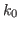
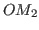
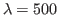
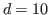
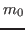

Next: Laser Doppler Vibrometry Up: Ph.D. Qualifying Examination Previous: Interferometry
N.B. element is a clear piece of dielectric with the same index of refraction and width as the beam-splitter . It corrects for the difference in path lengths between the two beams. However, this will not correct for the additional phase term , which is introduced as the result of internal reflection on the  leg, which occurs at . There will also be a secondary set of beams (omitted), which will occur on the left side of .[15, p.388]
This implementation is still not exactly correct in theory, but after a little calibration, This will result in a fringe pattern at Detector, the nulls of which are fairly close to:
If instead, we use a monochromatic source, the interference between two parallel mirrors and will consist of many concentric rings. These rings are called fringes of equal inclination. Each ring has a fixed order, , which is its distance in number of rings from the center. By counting the number of rings, we can find the number of half-wavelengths between the mirrors and . As the mirrors move closer together, the order decreases, and one after another, the rings move toward the center of the bull's-eye and disappear.
To find the angular radius of a particular ring, , we use the following:[15, p. 390]
If we replace with an arbitrary surface, we could use this as a rangefinder. It turns out that for some applications, this sort of topology works well.[15, p. 390] Adding an attenuator on the leg--now called the reference beam--we could theoretically adjust for losses due to scattering. This will be necessary for the system to produce an interference pattern in the first place.
Keep in mind that for a wavelength  nm, and a distance  cm, the order , which corresponds to the number of fringes in the pattern, will be . While interpreting the fringe pattern as a whole is something our eyes can do quickly, it is unreasonable to assume our detector would have the spatial resolution or frame rate necessary to do this in real time. Furthermore, it isn't necessary, as long as we decide to look at the velocity instead.
A typical interferometer only has a single photodetector, or at most an array. A single photodetector can be used to count the number of fringes that pass over a single point, and would be able to detect the magnitude of the velocity. In general, to detect the velocity while preserving the direction, a slightly different technique is used.[2, p. 241]
The cost of building such a device as a prototype is not very high. There are potentially some optical components that would need to be well made. In particular, the mirrors would have to be of good quality, and everything would have to be mounted with finely adjustable stands. However, to construct a housing for the device would be costly.
The field-readiness of the device, as described above, is fairly low. There are 8 minimum components, counting the reference attenuator (discussed but not shown), that would each require fully locking, adjustable supports. Furthermore, unless one added additional mirrors, the maximum distance that could be measured with the device is the length of the reference beam. Therefore an arm must be constructed to house it, etc.
The quality is limited by the devices inability to discern direction of motion. The device is clearly much better suited for displacement measurements. If the fringe patterns could be analyzed more directly, it could be made to track direction, but that would necessitate a loss in frame rate, field readiness, and an increase in cost.
The device is fairly general. It can measure vibrations even on rough surfaces by calibrating the reference beam.
joe 2014-01-08